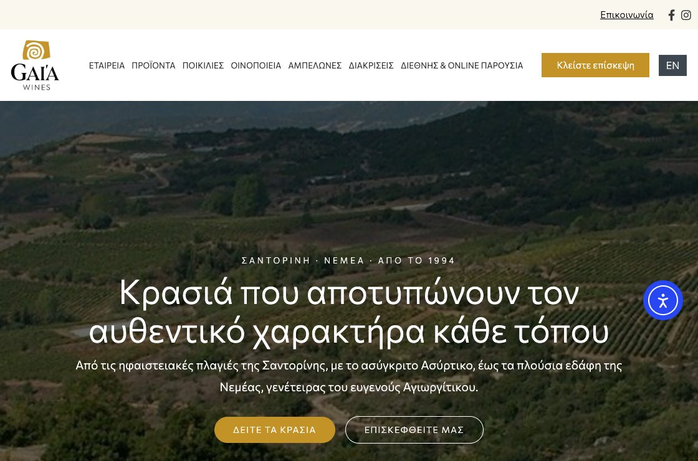
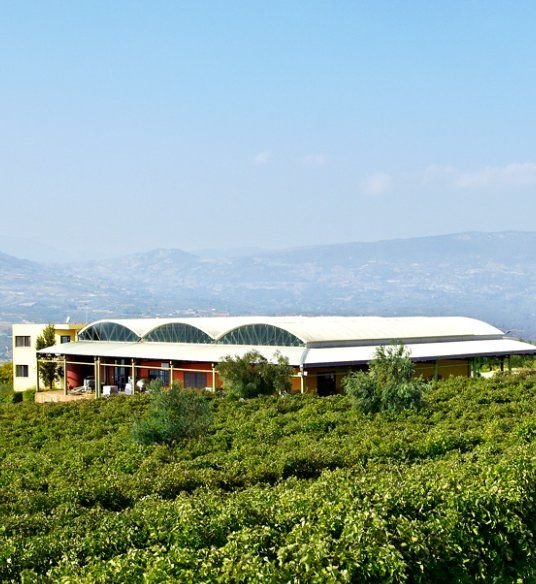

Πίσω στις συμμετοχές
Οινοποιία · Σαντορίνη & Νεμέα

Gaia Wines
Αυτόχθονες ελληνικές ποικιλίες, από το 1994.
1994Ίδρυση
2Οινοποιεία — Σαντορίνη, Νεμέα
25+Χώρες εξαγωγών
2Χαρακτηριστικές ποικιλίες — Ασύρτικο, Αγιωργίτικο


Η εταιρεία
Οι ελληνικές αυτόχθονες ποικιλίες στον κόσμο.
Η Gaia Wines ιδρύθηκε το 1994 από τον οινολόγο Γιάννη Παρασκευόπουλο και τον γεωπόνο Παντελή Καρατσαλό, με στόχο να αναδείξει τις ελληνικές αυτόχθονες ποικιλίες σε όλο τον κόσμο.
Λειτουργεί δύο οινοποιεία — στη Σαντορίνη, πατρίδα του Ασύρτικου, και στο Κουτσί Νεμέας, γη του Αγιωργίτικου. Κρασιά όπως το Θαλασσίτης και το Gaia Estate εξάγονται σε 25+ χώρες.
ΣαντορίνηΑσύρτικο · Θαλασσίτης
ΝεμέαΑγιωργίτικο · Κουτσί, Κορινθία · Gaia Estate
Περισσότερα από τον όμιλο
Όλες οι συμμετοχές
Οίνος & Αποστάγματα
House of Wine
Μία από τις μεγαλύτερες online κάβες της Ελλάδας, με 1.000+ ετικέτες κρασιού και αποσταγμάτων.
ΕστίασηΛουκουμάδες Αιγαίον
Ιστορικό κατάστημα λουκουμάδων στην Αθήνα, από το 1926.
Διαχείριση Ακίνητης ΠεριουσίαςCimolus
Εταιρεία διαχείρισης και αξιοποίησης ακίνητης περιουσίας.